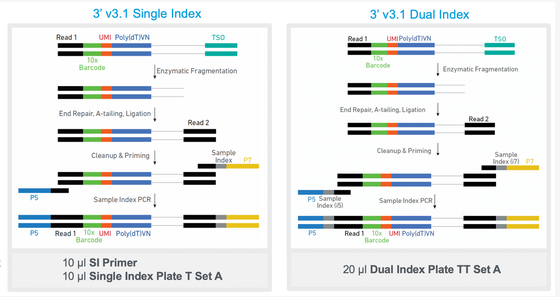
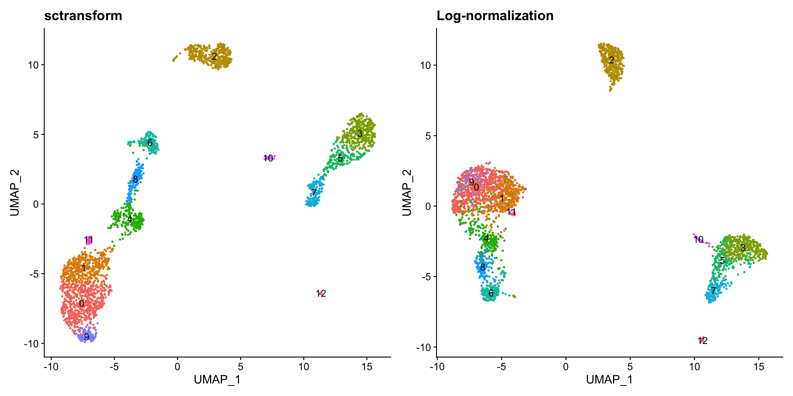

library(future)
# check the current active plan
plan()sequential:
- args: function (..., envir = parent.frame())
- tweaked: FALSE
- call: NULLscrna_r_workshop_2023 (cd ~ and mkdir scrna_r_workshop_2023), then type pwd to get the path to this folder.Interactive Apps in the blue menu bar and click on RStudio on Singularity under Expert GUIs.Fill in the fields as follows:
Account: leave blankPartition: leave blankNumber of hours: 3Num Cores: 8Memory: 90Singularity Container Path:/gpfs/data/shared/databases/workshops/bootcamp_2023/scrna_r_workshop.sifPackage install Path: leave blankPath for R Executable: This should be the full path to the scrna_r_workshop_2023 you made in step 3.R Module: leave blankAdditional Data Path: /gpfs/data/shared/databases/workshops/bootcamp_2023/scrna_r_workshopOnce your job starts, click the button to connect to session.
At the top of the screen you’ll see a menu bar that starts with ‘file’, click on ‘file’ and ‘open file’.
It will ask for a File name – paste this into the box: /gpfs/data/shared/databases/workshops/bootcamp_2023/scrna_r_workshop/intro.Rmd
What we will cover
- How does scRNA-seq differ from bulk RNA-seq?
- scRNAseq technologies
- Parallelization options for Seurat and other packages
- Seurat objects and importing data
- Data merging, QC, and filtering
- SCTransform normalization, clustering, dimension reduction
- Data integration - Differential expression testing
- Data visualization
- Classifying cell types with a reference atlas with TransferAnchors from Seurat
Much of this notebook is adapted from the Seurat vignettes https://satijalab.org/seurat and GitHub repository https://github.com/satijalab/seurat

In bulk RNA-seq you are taking a snapshot of expression of all the cells in a sample and your measurements are aggregated across all of those cells.
In scRNA-seq, you can get a sense of the heterogeneity of the cells in your sample.
Are there novel or rare cell types?
What about cell type specific gene expression?
Does the distribution of different cell types change across time or treatment?
This increased resolution comes with some unique challenges.
Dropouts - genes that are not detected in some cells, can lead to sparse expression matrices with many zero values.
Doublets - sequencing two cells at the same time and can’t distinguish their expression or cell types, need to filter these out during QC.
Dying cells - you will lose some cells because they are dead or dying, you can also filter these out during sample QC.
You also should be cautious when thinking about your sample sizes. For example, you may be sequencing thousands of cells but if they all come from the same mouse you lose the ability to generalize your findings.
10x sequencing encapsulates a cell, reagents, and a bead w/ primer in an oil droplet (aka GEM or Gel Bead-in EMulsion). Again, if you have a situation where one droplet has two cells, this is a ‘doublet’, you can also have empty droplets where there’s no cell encapsulated.

After encapsulation of cells, beads, and reagents in the oil droplets, the bead is dissolved and releases primers. The poly (dT) primers are used for generating the gene expression libraries. The capture sequence primers are shown in a lighter shading because they are only used in situations where you’d like to add an extra channel of information to your experiment by using feature barcoding (cell-surface protein characterization, multiplexing, etc.).
Let’s go over the details of how the library prep works (see https://teichlab.github.io/scg_lib_structs/methods_html/10xChromium3.html)
 The polyA mRNAs are captured using the oligo(dT) on the beads, MMLV (Moloney Murine Leukemia Virus) reverse transcriptase synthesizes complementary strand to the fragment thats captured.\\
The polyA mRNAs are captured using the oligo(dT) on the beads, MMLV (Moloney Murine Leukemia Virus) reverse transcriptase synthesizes complementary strand to the fragment thats captured.\\

The RT adds some extra Cs on the end.\\
The template-switching oligo is added so we can continue across the other strand.\\
 Add primers to amplify full length cDNA\\
Add primers to amplify full length cDNA\\
 Fragment cDNA, perform A-tailing\\
Fragment cDNA, perform A-tailing\\
 At this point we add the Truseq adapters, product 3 is what you’ll actually sequence.\\
At this point we add the Truseq adapters, product 3 is what you’ll actually sequence.\\
Add the library PCR primers 1 and 2 to amplify the library\\
 The final library structure looks like the above image – the exact length of the UMI might depend on which chemistry you’re using.
The final library structure looks like the above image – the exact length of the UMI might depend on which chemistry you’re using.
The actual sequencing looks like the above image. Truseq Read 1 uses bottom strand as template and sequences the bacrode + UMI. Sample Index primer sequences the sample index using bottom strand as template. Regenerate clusters and Truseq Read 2 primer sequences the second read using the top strand as template.\\

The above steps assume a single index library, if you’re using dual indexes there will be another sample index between the P5 and Truseq Read 1. Dual indexed libraries are beneficial to help prevent index hopping (https://www.10xgenomics.com/blog/sequence-with-confidence-understand-index-hopping-and-how-to-resolve-it).\\
::: {.callout-tip}
## Tip
https://teichlab.github.io/scg_lib_structs/ is an excellent resource for information about the resulting library structures for 10x libraries (and other single cell technologies like Drop-seq or SMART-seq) and was our resource for most of this section.
:::Let’s get started. First, we can set the .libPaths(), which essentially tells R that it should look for packages inside these locations inside the Singularity container.
All of the methods we are discussing here involve computationally heavy methods, and as such also take advantage of parallelization where they can. Often in their documentation you will find how to use multiple cores when calling a function, usually involving a provided argument or involving a package called future.
For example, Seurat has a vignette on parallelization with future. We will follow it here:
library(future)
# check the current active plan
plan()sequential:
- args: function (..., envir = parent.frame())
- tweaked: FALSE
- call: NULLplan() says that we are currently set up to run code sequentially or non-parallelized. To see more information, run this code chunk:
?future::planNow, we set workers=8 because we’ve requested 8 cores. Additionally, we set multisession instead of multiprocess despite what the vignette says, because multiprocess is actually deprecated in future and we should be explicitly specifying multisession or multicore instead. Getting into the difference is out of scope of this workshop, but you can read more on future yourself if interested.
# change the current plan to access parallelization
plan("multisession", workers = 8)
plan()multisession:
- args: function (..., workers = 8, envir = parent.frame())
- tweaked: TRUE
- call: plan("multisession", workers = 8)We’ll also set a seed at the start of the notebook so that we can reproduce our results if we decide to re-run this notebook at some future date. We also set future.globals.maxSize, see the Seurat future vignette linked above for discussion about why we do this (basically we might be exceeding the allowed global variable size so we make that default bigger).
set.seed(61)
options(future.globals.maxSize = 4000 * 1024^2)In November of 2023, Seurat made a major upgrade to Seurat v5 (https://github.com/satijalab/seurat/releases), which included many new functions and other changes (https://satijalab.org/seurat/articles/announcements.html#changes-in-seurat-v5), including some very big changes to the default behavior of Seurat. You will likely see different results depending on which version of Seurat you have used for your analysis. Feel free to come to our office hours if you want help setting up reproducible analyses using either version of Seurat.
This workshop focuses on using Seurat objects to structure your scRNA-seq data (https://github.com/satijalab/seurat/wiki/Seurat), we will attempt to cover how to interact with Seurat objects in Seurat v4 and v5, but won’t exhaustively cover the differences between the two versions.
Here’s a schematic of a Seurat object:

assays is a list of all the assays in the object.
Defaults to RNA assay, but you can add others (like SCT for normalizd counts, shown in the figure above, could also be antibody-derived tags, etc.).
You can see all assays using Assays(ifnb), see which assay is the currently active assay by looking in the active.assay slot (ifnb@active.assay) and switch between them using the DefaultAssay() function (DefaultAssay(ifnb) <- 'RNA').
Each assay will store multiple transformations of the data in different slots (or layers in Seurat v5) – in the case of RNA data these slots are:
@counts contains the raw counts.@data contains the normalized counts.@scale.data contains the scaled data for dimensional reduction.The slots (Seurat v4) or layers (Seurat v5) store the data as a sparse matrix where the rows are gene and the columns are cells.
In Seurat v4, you could access the raw counts like this:GetAssayData(ifnb, assay="RNA", slot='counts'). This will still work in Seurat v5, but you’ll get a warning message. In Seurat v5 it is intended that you access the counts using the LayerData function, like this: LayerData(ifnb, assay='RNA', layer='counts')
In either version of Seurat ifnb[['RNA']]$counts will also work.
meta.data is a matrix of all the cell-level metadata.
nCount_RNA and nFeature_RNA
nCount_RNA is the total number of molecules (UMIs) detected within a cell.nFeature_RNA is the total number of genes detected within a cell.meta.data are also called Idents in Seurat.Ident in the active.ident slot (ifnb@active.ident) and switch between them using the Idents() function (this will probably be important for running differential expression testing).table(Idents(ifnb)) for a quick summary of the number of cells in each grouping.graphs is a list of the nearest neighbor graphs.
graphs are cell x cell matrices containing the neighborhood overlap (Jaccard index) between every cell and its nearest neighbors.reductions is a list of DimReduc objects.version contains information about which version of Seurat was used to make the object.tools and misc that can be populated by specific analysis tools (tools) or users can store their own additional information (misc).Much of this notebook is taken from the various Seurat vignettes: https://satijalab.org/seurat/articles/get_started.html
First, load all the libraries we need, including some Seurat data packages. The last line will update the Seurat objects so that they are compatible with the newest version of Seurat.
.libPaths(c('/usr/local/lib/R/site-library', '/usr/local/lib/R/library'))
library(RColorBrewer)
library(Seurat)
library(patchwork)
#library(ggplot2)
library(dplyr)
library(hdf5r)
library(stringr)
library(biomaRt)
#library(viridis)
#library(SeuratDisk)
library(SeuratData)
#library(msigdbr)
#library('pbmc3k.SeuratData')
#library('cbmc.SeuratData')
library('ifnb.SeuratData')
#data("pbmc3k")
#data("cbmc")
data("ifnb")
ifnb <- UpdateSeuratObject(ifnb)
data("pbmc3k")
pbmc3k <- UpdateSeuratObject(pbmc3k)SeuratData package for some test data.AvailableData() to see what datasets are availableSeuratData::AvailableData() %>% data.frame() %>% head() Dataset Version
adiposeref.SeuratData adiposeref 1.0.0
bmcite.SeuratData bmcite 0.3.0
bonemarrowref.SeuratData bonemarrowref 1.0.0
cbmc.SeuratData cbmc 3.1.4
celegans.embryo.SeuratData celegans.embryo 0.1.0
fetusref.SeuratData fetusref 1.0.0
Summary
adiposeref.SeuratData Azimuth Reference: adipose
bmcite.SeuratData 30k Bone Marrow Cells
bonemarrowref.SeuratData Azimuth Reference: bonemarrow
cbmc.SeuratData scRNAseq and 13-antibody sequencing of CBMCs
celegans.embryo.SeuratData 6k C. elegans embryos from Packer and Zhu et al (2019)
fetusref.SeuratData Azimuth Reference: fetus
species system ncells
adiposeref.SeuratData human adipose 160075
bmcite.SeuratData human bone marrow 30672
bonemarrowref.SeuratData human bonemarrow 297627
cbmc.SeuratData human CBMC (cord blood) 8617
celegans.embryo.SeuratData C. elegans embryo 6188
fetusref.SeuratData human fetus 377456
tech seurat default.dataset
adiposeref.SeuratData scRNA-seq and sNuc-seq <NA> <NA>
bmcite.SeuratData <NA> 3.2.2 <NA>
bonemarrowref.SeuratData 10x v2 <NA> <NA>
cbmc.SeuratData CITE-seq 3.1.4 raw
celegans.embryo.SeuratData <NA> <NA> raw
fetusref.SeuratData <NA> <NA> <NA>
disk.datasets other.datasets notes Installed
adiposeref.SeuratData <NA> <NA> <NA> FALSE
bmcite.SeuratData <NA> <NA> <NA> FALSE
bonemarrowref.SeuratData <NA> <NA> <NA> FALSE
cbmc.SeuratData processed <NA> <NA> FALSE
celegans.embryo.SeuratData <NA> <NA> <NA> FALSE
fetusref.SeuratData <NA> <NA> <NA> FALSE
InstalledVersion
adiposeref.SeuratData <NA>
bmcite.SeuratData <NA>
bonemarrowref.SeuratData <NA>
cbmc.SeuratData <NA>
celegans.embryo.SeuratData <NA>
fetusref.SeuratData <NA>SeuratData::AvailableData() %>% data.frame() %>% dplyr::filter(Installed == 'TRUE') Dataset Version Summary species
ifnb.SeuratData ifnb 3.1.0 IFNB-Stimulated and Control PBMCs human
pbmc3k.SeuratData pbmc3k 3.1.4 3k PBMCs from 10X Genomics human
system ncells tech seurat default.dataset disk.datasets
ifnb.SeuratData PBMC 13999 10x v1 <NA> raw <NA>
pbmc3k.SeuratData PBMC 2700 10x v1 3.1.4 raw <NA>
other.datasets notes Installed InstalledVersion
ifnb.SeuratData processed <NA> TRUE 3.1.0
pbmc3k.SeuratData pbmc3k.final <NA> TRUE 3.1.4InstallData but won’t have permissions to install in this container.Read10X or Read10X_h5 to import data.Read10X_h5 works with H5 files – “Hierarchical Data Format (HDF5 or H5). H5 is a binary format that can compress and access data much more efficiently than text formats such as MEX, which is especially useful when dealing with large datasets.” https://support.10xgenomics.com/single-cell-gene-expression/software/pipelines/latest/advanced/h5_matrices.Read10X and give a path to a folder that contains your matrix, features, and barcode tsv files.CreateSeuratObject function.As an aside, you can also import counts matrix data from GEO using something like this function I wrote based on a biostars post (although I make no guarantees that this will work with everything from GEO – proceed with caution and feel free to come by office hours for help if this is something you need to do):
#https://www.biostars.org/p/9527335/#9527339
counts_to_seurat <- function(matrix_path, project){
#use fread to import the data
mat <- data.table::fread(matrix_path)
#set rownames to be the first column of gene IDs
rownames(mat) <- mat$V1
#make `mat` be only numeric data by removing column of gene IDs
mat$V1 <- NULL
#create Seurat object
seu <- CreateSeuratObject(counts = mat,
project = project)
return(seu)
}
E12_JS_14 <- counts_to_seurat(matrix_path = '/data/cbc/Dennery_scRNAseq/dennery_2023_grant/GSE165063/GSM5025543_E12_JS-14_processed_counts.csv', project = 'E12_JS_14')We can look at the Seurat object we’ve loaded from SeuratData:
?ifnbThe ifnb dataset is 14,000 IFNB-Stimulated and Control PBMCs (peripheral blood mononuclear cells).
ifnbAn object of class Seurat
14053 features across 13999 samples within 1 assay
Active assay: RNA (14053 features, 0 variable features)
2 layers present: counts, dataWe can also see that Seurat v5 assays store data in layers. These layers can store raw, un-normalized counts (layer=‘counts’), normalized data (layer=‘data’) or z-scored/variance-stabilized data (layer=‘scale.data’). What assays and meta.data are available?
ifnb@assays$RNA
Assay data with 14053 features for 13999 cells
First 10 features:
AL627309.1, RP11-206L10.2, LINC00115, NOC2L, KLHL17, PLEKHN1, HES4,
ISG15, AGRN, C1orf159 head(ifnb@meta.data) orig.ident nCount_RNA nFeature_RNA stim seurat_annotations
AAACATACATTTCC.1 IMMUNE_CTRL 3017 877 CTRL CD14 Mono
AAACATACCAGAAA.1 IMMUNE_CTRL 2481 713 CTRL CD14 Mono
AAACATACCTCGCT.1 IMMUNE_CTRL 3420 850 CTRL CD14 Mono
AAACATACCTGGTA.1 IMMUNE_CTRL 3156 1109 CTRL pDC
AAACATACGATGAA.1 IMMUNE_CTRL 1868 634 CTRL CD4 Memory T
AAACATACGGCATT.1 IMMUNE_CTRL 1581 557 CTRL CD14 MonoWe have an RNA assay, information about which experimental condition the cell came from (orig.ident and stim), the number of genes (nFeature_RNA) and molecules (nCount_RNA) in each cell. This particular object also comes pre-annotated (seurat_annotations).
We will aim to eventually integrate the different samples (IMMUNE_CTRL and IMMUNE_STIM from orig.ident) together. In previous versions of Seurat, we would require the data to be represented as a list of different Seurat objects. When using Seurat v5 assays, we can instead keep all the data in one object, but simply split the layers.
ifnb[["RNA"]] <- split(ifnb[["RNA"]], f = ifnb$orig.ident)Warning: Input is a v3 assay and `split()` only works for v5 assays; converting
• to a v5 assayWarning: Assay RNA changing from Assay to Assay5ifnbAn object of class Seurat
14053 features across 13999 samples within 1 assay
Active assay: RNA (14053 features, 0 variable features)
4 layers present: counts.IMMUNE_CTRL, counts.IMMUNE_STIM, data.IMMUNE_CTRL, data.IMMUNE_STIMAfter splitting, there are now 4 layers (a counts and data layer for each batch). Since the data is split into layers, normalization and variable feature identification is performed for each sample independently (a consensus set of variable features is automatically identified).
In addition to ifnb, we have also installed pbmc3k, which is from 2,700 peripheral blood mononuclear cells (PBMC) from 10X genomics.
?pbmc3k
pbmc3k@assays$RNA
Assay data with 13714 features for 2700 cells
First 10 features:
AL627309.1, AP006222.2, RP11-206L10.2, RP11-206L10.9, LINC00115, NOC2L,
KLHL17, PLEKHN1, RP11-54O7.17, HES4 head(pbmc3k@meta.data) orig.ident nCount_RNA nFeature_RNA seurat_annotations
AAACATACAACCAC pbmc3k 2419 779 Memory CD4 T
AAACATTGAGCTAC pbmc3k 4903 1352 B
AAACATTGATCAGC pbmc3k 3147 1129 Memory CD4 T
AAACCGTGCTTCCG pbmc3k 2639 960 CD14+ Mono
AAACCGTGTATGCG pbmc3k 980 521 NK
AAACGCACTGGTAC pbmc3k 2163 781 Memory CD4 Tpbmc3k <- subset(pbmc3k, downsample = 300)
ifnb <- subset(ifnb, downsample = 700)merge() merges the raw count matrices of two Seurat objects and creates a new Seurat object with the resulting combined raw count matrix.add.cell.ids parameter with an c(x, y) vector, which will prepend the given identifier to the beginning of each cell name.orig.ident.all_data <- merge(x = ifnb, y = pbmc3k, add.cell.ids = c("ifnb", "pbmc3k"), project = 'pbmc')PercentageFeatureSet() function, which calculates the percentage of counts originating from a set of featuresrownames(all_data) %>% grep(pattern = '^mt-', ignore.case = TRUE, value = TRUE) [1] "MT-ND1" "MT-ND2" "MT-CO1" "MT-CO2" "MT-ATP8" "MT-ATP6" "MT-CO3"
[8] "MT-ND3" "MT-ND4L" "MT-ND4" "MT-ND5" "MT-ND6" "MT-CYB" all_data[["percent.mt"]] <- PercentageFeatureSet(all_data, pattern = "^MT-")Idents(all_data) <- 'orig.ident'
levels(all_data) <- c("pbmc3k", "IMMUNE_CTRL", "IMMUNE_STIM")percent.mt, nFeature_RNA and nCount_RNAnFeature_RNA is the number of genesnCount_RNA is the number of UMIs (unique molecules – like counts)VlnPlot(all_data, features = "nFeature_RNA")
VlnPlot(all_data, features = "nCount_RNA")VlnPlot(all_data, features="percent.mt")FeatureScatter(all_data, feature1 = "nCount_RNA", feature2 = "nFeature_RNA")FeatureScatter(all_data, feature1 = "nCount_RNA", feature2 = "percent.mt")FeatureScatter(all_data, feature1 = "nFeature_RNA", feature2 = "percent.mt")You can also just use ggplot to make your own custom visualizations of the information in the metadata. We make a separate matrix called qc_data and sorting it based on the percent.mt column. Then we make our own ggplot and specify that the x and y axes should be nCount_RNA and nFeature_RNA and that the points should be colored based on percent.mt. Then, use scale_color_gradientn to specify how the points should be colored, specifying that the limit should be between 0 and 10 and that we should squish anything that is out of bounds (effectively making our limits 0 and >10).
qc_data <- all_data@meta.data[c('orig.ident','nCount_RNA','nFeature_RNA','percent.mt')] %>% arrange(percent.mt)
ggplot2::ggplot(qc_data, ggplot2::aes(x = nCount_RNA, y = nFeature_RNA, color = percent.mt)) +
ggplot2::geom_point() +
ggplot2:: scale_color_gradientn(colors = rev(brewer.pal(5, "Spectral")), limits = c(0,10), oob = (scales::squish)) +
ggplot2::facet_wrap(~orig.ident) +
ggplot2::theme_bw()nFeatures)percent.mt)nFeatures)nCount) detected in a cell corresponds with the number of genes (nFeatures)ifnb data and the nFeature_RNA scatter plots look strange – perhaps this dataset was pre-filtered before being packaged into SeuratData.pbmc3k data, we can see groups of cells with high mitochondrial counts, low UMI counts, and lower numbers of genes.subset, we’ll keep cells that have between 500 and 7000 nFeature_RNA (genes) and less than 5% mitochondrial reads.all_data_sub <- subset(all_data, subset = nFeature_RNA > 500 & nFeature_RNA < 7000 & percent.mt < 5)qc_data_sub <- all_data_sub@meta.data[c('orig.ident','nCount_RNA','nFeature_RNA','percent.mt')] %>% arrange(percent.mt)
ggplot2::ggplot(qc_data_sub,ggplot2:: aes(x = nCount_RNA, y = nFeature_RNA, color = percent.mt)) +
ggplot2::geom_point() +
ggplot2::scale_color_gradientn(colors = rev(brewer.pal(5, "Spectral")), limits = c(0,10), oob = (scales::squish)) +
ggplot2::facet_wrap(~orig.ident) +
ggplot2::theme_bw()pbmc3k).table(all_data@meta.data$orig.ident)
IMMUNE_CTRL IMMUNE_STIM pbmc3k
700 700 300 table(all_data_sub@meta.data$orig.ident)
IMMUNE_CTRL IMMUNE_STIM pbmc3k
700 700 270 scRNAseq data is normalized so that we can mitigate technical effects while preserving the biological signal in the data – we should be able to find the biological signal in cells irrespective of how deeply we sequenced the cell. The theory behind SCTransform (https://genomebiology.biomedcentral.com/articles/10.1186/s13059-019-1874-1) is very similar to the generalized linear models (GLMs) used in bulk RNAseq analysis packages like DESeq2 and edgeR. In DESeq2 a negative binomial model is fitted to the counts and the mean and dispersion (roughly speaking how variable the observed count will be from the mean count) estimates from that model are used as the test statistics for comparison between groups. The same idea applies with SCTransform, with an additional aspect where SCTransform pools information across genes with similar abundances in order to address the higher sparsity of single cell data.
Below is a side-by-side comparison of sctransform with NormalizeData, FindVariableFeatures and ScaleData on the PBMC3k data:

We also like this figure from the SCTransform paper, which shows how SCTransform (‘Pearson Residuals’) and the standard log-transformation approach (‘Log-normalization’) helps alleviate variance in your data from sequencing depth alone :
The paper states:
As our workflow leverages all genes (or a random sub-set) for the initial regularization, we make an implicit assumption that the majority of genes in the dataset do not exhibit significant biological variation...this assumption may be overly simplistic when performing scRNA-seq on a highly heterogeneous sample, we did not observe adverse affects when applying our model to human PBMC data, or any of the other datasets we examined.
SCTransform might not work well if your data is highly heterogeneous and you expect that a high proportion of genes will exhibit significant biological variation across your samples. In this case, we would recommend the more standard workflow of NormalizeData, FindVariableFeatures, and ScaleData.
Seurat v5 runs SCTransform v2 (https://satijalab.org/seurat/archive/v4.3/sctransform_v2_vignette) by default, while Seurat v4 runs SCTransform v1 by default. SCTransform v2 “improves speed and memory consumption, the stability of parameter estimates, the identification of variable features, and the the ability to perform downstream differential expression analyses.” This means you might get different results if you run Seurat v5 and re-normalize data that you have previously processed with Seurat v4. If you want to change from the default veresion of SCTransform, you can add the argument vst.flavor = "v1" (or vst.flavor = "v2"))
We will normalize using SCTransform and you might get see a warning that says ‘iteration limit reached’ when you run the function. This warning can be ignored (https://github.com/satijalab/sctransform/issues/25) because the parameter estimation generating this warning is regularized later anyway. You can use the vars.to.regress argument to regress out nuisance variables (like cell cycle, batch effects, or percent.mt). By default SCTransform will only return data for variable genes in the scale data slot – adding the return.only.var.genes = FALSE argument to the function call to turn this option off (https://github.com/satijalab/seurat/issues/3553). In previous versions of Seurat, you would have to split your object into a list of Seurat objects based on the orig.ident and then run SCTransform on the list, which is not necessary in Seurat v5.
start.time <- Sys.time()
all_data_sub <- SCTransform(all_data_sub, vars.to.regress = "percent.mt", verbose = FALSE, return.only.var.genes = FALSE)
end.time <- Sys.time()
end.time - start.timeTime difference of 2.525375 minsThen run PCA
all_data_sub <- RunPCA(all_data_sub)Warning in PrepDR(object = object, features = features, verbose = verbose): The
following 134 features requested have not been scaled (running reduction
without them): CCL2, VMO1, CCL7, CXCL10, IDO1, MIR155HG, HBB, C15orf48, CXCL3,
HBA2, HBA1, SDS, TNFAIP6, CXCL11, SERPINB2, IL1RN, DUSP4, CYP1B1, PLA2G7,
RAMP1, FCER1A, TCL1A, TVP23A, CCL22, HSPA1B, RP11-701P16.5, XCL2, LAG3, TYW3,
SESN3, THBS1, IL1R2, CENPF, HPSE, IL4I1, HBEGF, CD200, GADD45G, GNG11, CCL23,
RP1-313I6.12, RAPGEF2, CCL3L1, SDPR, OLR1, PRR5, MZB1, SERPINF1, P2RY6, POLR1C,
DHRS9, SMC6, L3MBTL3, MAP3K7CL, SCML1, ANKRD22, ASNS, IL2RB, SLC25A19, VPS45,
DNAJB4, LINC00998, CAMK1, TLR1, SLC7A11, CTNNAL1, CCR5, RP11-664D1.1, ZBP1,
XIST, SPHK1, TNFSF14, CCRL2, LINC00996, ANPEP, NAPG, TRNT1, RAB30-AS1, AQP9,
CCL8, CXCL1, NUPR1, LINC00926, C1QB, VPREB3, ID1, NCR3, FCER2, SPINK1, MT-ND2,
SPP1, MT-CYB, CTD-2035E11.3, FCGR3B, TNFRSF13B, RFNG, FASLG, SPIB, EDN1, ENHO,
MT-CO2, RBP7, RNASE1, NQO1, AL928768.3, ANKRD37, C19orf59, CH25H, IGFBP4,
FCRL6, ABHD5, AP003733.1, MMP9, NMB, KIAA0125, PKIB, PSAT1, MT-ATP6, DDX20,
C16orf74, HRASLS2, EIF1AY, MASTL, RPAP2, EBI3, SECISBP2L, SCT, RGS18, FOXN2,
CHCHD4, PMP22, IRAK2, FRMD4B, IL10PC_ 1
Positive: FTL, TIMP1, FTH1, SOD2, LYZ, TYROBP, FCER1G, CST3, APOBEC3A, S100A8
S100A9, LGALS1, LGALS3, S100A4, HLA-DRA, CD63, TYMP, IL8, S100A11, ANXA5
IFITM3, FCN1, SAT1, CTSL, CTSB, S100A10, HLA-DRB1, ANXA2, MS4A7, PSAP
Negative: RPL3, RPS18, RPS6, RPL13, RPL13A, LTB, RPL21, CCR7, RPS2, RPS4X
RPL34, RPS3, GIMAP7, RPS27A, RPL7, RPS14, RPL10, RPS3A, CD3D, RPL32
LDHB, RPS15A, RPS27, RPL10A, PTMA, RPS12, RPS5, RPS19, RPSA, RPL9
PC_ 2
Positive: RPS18, RPL34, RPL13, RPL3, RPS14, RPS4X, LTB, RPL10, RPL32, RPL13A
RPS6, RPS12, RPL7, RPL21, RPS2, LDHB, RPS15A, RPS3, PABPC1, RPL31
CD3D, RPL11, RPS3A, RPS27A, GIMAP7, RPL10A, RPS27, GIMAP5, RPS13, RPSA
Negative: CD74, HLA-DRA, NKG7, GZMB, HLA-DQA1, CCL5, GNLY, HLA-DRB1, HLA-DPB1, CST7
HLA-DPA1, HLA-DQB1, CD83, HERPUD1, PRF1, GZMA, PMAIP1, REL, CD69, HSPD1
HSPE1, SRSF7, APOBEC3G, HSP90AB1, RAN, SRSF2, CTSW, DUSP2, GZMH, BIRC3
PC_ 3
Positive: HLA-DRA, CD74, HLA-DQA1, HLA-DRB1, HLA-DPB1, HLA-DPA1, HLA-DQB1, CD79A, CCR7, CD83
MS4A1, HLA-DMA, HERPUD1, IRF8, LYZ, TXN, NPM1, MYC, NME1, SYNGR2
HLA-DRB5, REL, FABP5, RPL18A, RPS18, RPS5, ID3, BIRC3, RPL10A, RPL13
Negative: NKG7, CCL5, GNLY, GZMB, PRF1, GZMA, CTSW, GZMH, APOBEC3G, CST7
FGFBP2, CLIC3, KLRD1, RARRES3, FCGR3A, CD247, CCL4, CD7, IL32, CD8A
HLA-A, HLA-C, CHST12, ALOX5AP, CXCR3, GZMM, HOPX, SH2D2A, CD2, C1orf21
PC_ 4
Positive: SRSF2, DDIT4, CACYBP, CREM, SRSF7, HSPA8, CD69, S100A8, HSPH1, S100A9
TRAT1, NOP58, FTL, CLK1, H3F3B, YPEL5, HSPB1, TSC22D3, ZFAS1, SOD1
JUNB, HSPE1, ATF4, PIK3IP1, CCNL1, HSPD1, UBC, NFKBIA, ZFAND2A, EIF5
Negative: CD74, HLA-DRA, HLA-DPB1, NKG7, HLA-DPA1, CCL5, GNLY, GZMB, CST7, HLA-DRB1
HLA-DQA1, HLA-DQB1, CD79A, APOBEC3G, CLIC3, CTSW, PRF1, GZMH, GZMA, FGFBP2
HLA-DMA, ALOX5AP, RPL3, CHST12, MS4A1, HLA-C, RPS2, RPS4X, PTPRCAP, SYNGR2
PC_ 5
Positive: FCGR3A, MS4A7, MS4A4A, TNFSF10, FAM26F, LST1, AIF1, CXCL16, IFITM2, GBP1
IFITM3, PLAC8, GBP5, HN1, CTSC, ATP1B3, WARS, CFD, SERPINA1, GBP2
TNFSF13B, FGL2, MT2A, C3AR1, RGS2, CD86, CTSS, VAMP5, TIMP1, IFIT3
Negative: S100A8, S100A9, IL8, LYZ, CD63, GPX1, LGALS1, FTL, LGALS3, S100A10
VIM, CTSB, GAPDH, CCL5, MARCKSL1, CSTB, NKG7, SH3BGRL3, CXCL2, CD14
CAPG, GZMB, HSPA5, TALDO1, CST7, VCAN, LMNA, GNLY, CTSL, TXN We can make an elbow plot:
ElbowPlot(all_data_sub)Based on this plot, we get diminishing information returned once we get above ~10-15 PCs. We will use this information when we run clustering.
Integration of single-cell sequencing datasets, for example across experimental batches, donors, or conditions, is often an important step in scRNA-seq workflows. Integrative analysis can help to match shared cell types and states across datasets, which can boost statistical power, and most importantly, facilitate accurate comparative analysis across datasets. In previous versions of Seurat we introduced methods for integrative analysis, including our ‘anchor-based’ integration workflow. Many labs have also published powerful and pioneering methods, including Harmony and scVI, for integrative analysis. We recognize that while the goal of matching shared cell types across datasets may be important for many problems, users may also be concerned about which method to use, or that integration could result in a loss of biological resolution. In Seurat v5, we introduce more flexible and streamlined infrastructure to run different integration algorithms with a single line of code. This makes it easier to explore the results of different integration methods, and to compare these results to a workflow that excludes integration steps.
Seurat v5 enables streamlined integrative analysis using the IntegrateLayers function. The method currently supports five integration methods. Each of these methods performs integration in low-dimensional space, and returns a dimensional reduction (i.e. integrated.rpca) that aims to co-embed shared cell types across batches (samples):
Anchor-based CCA integration (method=CCAIntegration)
Anchor-based RPCA integration (method=RPCAIntegration)
Harmony (method=HarmonyIntegration)
FastMNN (method= FastMNNIntegration)
scVI (method=scVIIntegration)A detailed discussion of these different methods is outside the scope of this workshop, but you can find more detail on each method in Seurat’s documentation. However, the Seurat authors state:
By identifying shared sources of variation between datasets, CCA is well-suited for identifying anchors when cell types are conserved, but there are very substantial differences in gene expression across experiments. CCA-based integration therefore enables integrative analysis when experimental conditions or disease states introduce very strong expression shifts, or when integrating datasets across modalities and species. However, CCA-based integration may also lead to overcorrection, especially when a large proportion of cells are non-overlapping across datasets. RPCA-based integration runs faster, and also represents a more conservative approach where cells in different biological states are less likely to ‘align’ after integration. We therefore recommend RPCA during integrative analysis where:
There are also papers that attempt to benchmark different integration approaches:
“For example, the use of Harmony is appropriate for simple integration tasks with distinct batch and biological structure; however, this method typically ranks outside the top three when used for complex real data scenarios… Methods that used cell annotations to integrate batches (scGen and scANVI) performed well across tasks…Particularly in more complex integration tasks, we observed a tradeoff between batch effect removal and bio-conservation (Fig. 3a and Supplementary Data 1). While methods such as SAUCIE, LIGER, BBKNN and Seurat v3 tend to favor the removal of batch effects over conservation of biological variation, DESC and Conos make the opposite choice, and Scanorama, scVI and FastMNN (gene) balance these two objectives. Other methods strike different balances per task (Extended Data Fig. 4). This tradeoff is particularly noticeable where biological and batch effects overlap. For example, in the lung task, three datasets sample two distinct spatial locations (airway and parenchyma). Particular cell types such as endothelial cells perform different functions in these locations (for example, gas exchange in the parenchyma).” (Luecken et al 2022 https://doi.org/10.1038/s41592-021-01336-8).
We will run CCAIntegration (this was the default flavor of integration in previous versions of Seurat), RPCAIntegration, and HarmonyIntegration. Note that we are specifying that we used SCT normalization:
all_data_sub<- IntegrateLayers(
object = all_data_sub, method = CCAIntegration,
orig.reduction = "pca", new.reduction = "integrated.cca", normalization.method = "SCT",
verbose = FALSE
)all_data_sub <- IntegrateLayers(
object = all_data_sub, method = RPCAIntegration,
orig.reduction = "pca", new.reduction = "integrated.rpca", normalization.method = "SCT",
verbose = FALSE
)all_data_sub <- IntegrateLayers(
object = all_data_sub, method = HarmonyIntegration,
orig.reduction = "pca", new.reduction = "harmony", normalization.method = "SCT",
verbose = FALSE
)Warning: HarmonyMatrix is deprecated and will be removed in the future from the
API in the futureWarning: Warning: The parameters do_pca and npcs are deprecated. They will be ignored for this function call and please remove parameters do_pca and npcs and pass to harmony cell_embeddings directly.
This warning is displayed once per session.Warning: Warning: The parameter tau is deprecated. It will be ignored for this function call and please remove parameter tau in future function calls. Advanced users can set value of parameter tau by using parameter .options and function harmony_options().
This warning is displayed once per session.Warning: Warning: The parameter block.size is deprecated. It will be ignored for this function call and please remove parameter block.size in future function calls. Advanced users can set value of parameter block.size by using parameter .options and function harmony_options().
This warning is displayed once per session.Warning: Warning: The parameter max.iter.harmony is replaced with parameter max_iter. It will be ignored for this function call and please use parameter max_iter in future function calls.
This warning is displayed once per session.Warning: Warning: The parameter max.iter.cluster is deprecated. It will be ignored for this function call and please remove parameter max.iter.cluster in future function calls. Advanced users can set value of parameter max.iter.cluster by using parameter .options and function harmony_options().
This warning is displayed once per session.Warning: Warning: The parameter epsilon.cluster is deprecated. It will be ignored for this function call and please remove parameter epsilon.cluster in future function calls. Advanced users can set value of parameter epsilon.cluster by using parameter .options and function harmony_options().
This warning is displayed once per session.Warning: Warning: The parameter epsilon.harmony is deprecated. It will be ignored for this function call and please remove parameter epsilon.harmony in future function calls. If users want to control if harmony would stop early or not, use parameter early_stop. Advanced users can set value of parameter epsilon.harmony by using parameter .options and function harmony_options().
This warning is displayed once per session.Seurat will cluster your cells into groups of cells with similar expression patterns. The first step is FindNeighbors, which will construct a K-nearest neighbor (KNN) graph based on the euclidean distance in PCA space, and refine the edge weights between any two cells based on the shared overlap in their local neighborhoods (Jaccard similarity). To cluster the cells, we run FindClusters to apply the Louvain algorithm to iteratively group cells together, with the goal of optimizing the standard modularity function. FindClusters takes a resolution argument (defaults to a value of 0.8), which sets the granularity of the clustering, setting this parameter between 0.4-1.2 typically returns good results for single-cell datasets of around 3K cells but the resolution might increase for larger datasets. Use a value above 1 if you want a larger number of communities (clusters), and a value below 1 if you want a smaller number of communities.
all_data_sub <- FindNeighbors(all_data_sub, reduction = "integrated.cca", dims = 1:10)Computing nearest neighbor graphComputing SNNall_data_sub <- FindClusters(all_data_sub, resolution = .6, cluster.name = "cca_clusters")Modularity Optimizer version 1.3.0 by Ludo Waltman and Nees Jan van Eck
Number of nodes: 1670
Number of edges: 59208
Running Louvain algorithm...
Maximum modularity in 10 random starts: 0.8616
Number of communities: 9
Elapsed time: 0 secondsall_data_sub <- FindNeighbors(all_data_sub, reduction = "integrated.rpca", dims = 1:10)Computing nearest neighbor graph
Computing SNNall_data_sub <- FindClusters(all_data_sub, resolution = .6, cluster.name = "rpca_clusters")Modularity Optimizer version 1.3.0 by Ludo Waltman and Nees Jan van Eck
Number of nodes: 1670
Number of edges: 56912
Running Louvain algorithm...
Maximum modularity in 10 random starts: 0.8595
Number of communities: 9
Elapsed time: 0 secondsall_data_sub <- FindNeighbors(all_data_sub, reduction = "harmony", dims = 1:10)Computing nearest neighbor graph
Computing SNNall_data_sub <- FindClusters(all_data_sub, resolution = .6, cluster.name = "harmony_clusters")Modularity Optimizer version 1.3.0 by Ludo Waltman and Nees Jan van Eck
Number of nodes: 1670
Number of edges: 57828
Running Louvain algorithm...
Maximum modularity in 10 random starts: 0.8597
Number of communities: 9
Elapsed time: 0 secondsRun UMAP (Uniform Manifold Approximation and Projection) dimensional reduction technique on the unintegrated data and the different integration methods:
all_data_sub <- RunUMAP(all_data_sub, dims = 1:10, reduction = "pca", reduction.name = "umap.unintegrated")Warning: The default method for RunUMAP has changed from calling Python UMAP via reticulate to the R-native UWOT using the cosine metric
To use Python UMAP via reticulate, set umap.method to 'umap-learn' and metric to 'correlation'
This message will be shown once per session15:26:05 UMAP embedding parameters a = 0.9922 b = 1.112Found more than one class "dist" in cache; using the first, from namespace 'spam'Also defined by 'BiocGenerics'15:26:05 Read 1670 rows and found 10 numeric columns15:26:05 Using Annoy for neighbor search, n_neighbors = 30Found more than one class "dist" in cache; using the first, from namespace 'spam'Also defined by 'BiocGenerics'15:26:05 Building Annoy index with metric = cosine, n_trees = 500% 10 20 30 40 50 60 70 80 90 100%[----|----|----|----|----|----|----|----|----|----|**************************************************|
15:26:05 Writing NN index file to temp file /tmp/Rtmp7eCxNF/file1c38c82b53fdfd
15:26:05 Searching Annoy index using 8 threads, search_k = 3000
15:26:05 Annoy recall = 100%
15:26:06 Commencing smooth kNN distance calibration using 8 threads with target n_neighbors = 30
15:26:07 Initializing from normalized Laplacian + noise (using RSpectra)
15:26:07 Commencing optimization for 500 epochs, with 64818 positive edges
15:26:10 Optimization finishedall_data_sub <- RunUMAP(all_data_sub, reduction = "integrated.cca", dims = 1:10, reduction.name = "umap.cca")15:26:10 UMAP embedding parameters a = 0.9922 b = 1.112
Found more than one class "dist" in cache; using the first, from namespace 'spam'
Also defined by 'BiocGenerics'
15:26:10 Read 1670 rows and found 10 numeric columns
15:26:10 Using Annoy for neighbor search, n_neighbors = 30
Found more than one class "dist" in cache; using the first, from namespace 'spam'
Also defined by 'BiocGenerics'
15:26:10 Building Annoy index with metric = cosine, n_trees = 50
0% 10 20 30 40 50 60 70 80 90 100%
[----|----|----|----|----|----|----|----|----|----|
**************************************************|
15:26:10 Writing NN index file to temp file /tmp/Rtmp7eCxNF/file1c38c873140f8
15:26:10 Searching Annoy index using 8 threads, search_k = 3000
15:26:10 Annoy recall = 100%
15:26:11 Commencing smooth kNN distance calibration using 8 threads with target n_neighbors = 30
15:26:12 Initializing from normalized Laplacian + noise (using RSpectra)
15:26:12 Commencing optimization for 500 epochs, with 66896 positive edges
15:26:14 Optimization finishedall_data_sub <- RunUMAP(all_data_sub, reduction = "integrated.rpca", dims = 1:10, reduction.name = "umap.rpca")15:26:14 UMAP embedding parameters a = 0.9922 b = 1.112
Found more than one class "dist" in cache; using the first, from namespace 'spam'
Also defined by 'BiocGenerics'
15:26:14 Read 1670 rows and found 10 numeric columns
15:26:14 Using Annoy for neighbor search, n_neighbors = 30
Found more than one class "dist" in cache; using the first, from namespace 'spam'
Also defined by 'BiocGenerics'
15:26:14 Building Annoy index with metric = cosine, n_trees = 50
0% 10 20 30 40 50 60 70 80 90 100%
[----|----|----|----|----|----|----|----|----|----|
**************************************************|
15:26:14 Writing NN index file to temp file /tmp/Rtmp7eCxNF/file1c38c817257154
15:26:14 Searching Annoy index using 8 threads, search_k = 3000
15:26:15 Annoy recall = 100%
15:26:15 Commencing smooth kNN distance calibration using 8 threads with target n_neighbors = 30
15:26:16 Initializing from normalized Laplacian + noise (using RSpectra)
15:26:16 Commencing optimization for 500 epochs, with 66252 positive edges
15:26:19 Optimization finishedall_data_sub <- RunUMAP(all_data_sub, reduction = "harmony", dims = 1:10, reduction.name = "umap.harmony")15:26:19 UMAP embedding parameters a = 0.9922 b = 1.112
Found more than one class "dist" in cache; using the first, from namespace 'spam'
Also defined by 'BiocGenerics'
15:26:19 Read 1670 rows and found 10 numeric columns
15:26:19 Using Annoy for neighbor search, n_neighbors = 30
Found more than one class "dist" in cache; using the first, from namespace 'spam'
Also defined by 'BiocGenerics'
15:26:19 Building Annoy index with metric = cosine, n_trees = 50
0% 10 20 30 40 50 60 70 80 90 100%
[----|----|----|----|----|----|----|----|----|----|
**************************************************|
15:26:19 Writing NN index file to temp file /tmp/Rtmp7eCxNF/file1c38c83a7ab4ab
15:26:19 Searching Annoy index using 8 threads, search_k = 3000
15:26:19 Annoy recall = 100%
15:26:20 Commencing smooth kNN distance calibration using 8 threads with target n_neighbors = 30
15:26:21 Initializing from normalized Laplacian + noise (using RSpectra)
15:26:21 Commencing optimization for 500 epochs, with 66376 positive edges
15:26:23 Optimization finishedp1 <- DimPlot(
all_data_sub,
reduction = "umap.unintegrated",
group.by = "cca_clusters",
split.by = "orig.ident",
combine = FALSE, label.size = 2
)
p1[[1]]p2 <- DimPlot(
all_data_sub,
reduction = "umap.rpca",
group.by = "rpca_clusters",
split.by = "orig.ident",
combine = FALSE, label.size = 2
)
p2[[1]]
p3 <- DimPlot(
all_data_sub,
reduction = "umap.harmony",
group.by = "harmony_clusters",
split.by = "orig.ident",
combine = FALSE, label.size = 2
)
p3[[1]]p4 <- DimPlot(
all_data_sub,
reduction = "umap.cca",
group.by = "cca_clusters",
split.by = "orig.ident",
combine = FALSE, label.size = 2
)
p4[[1]]You can manually set the colors for the clusters, like this: First, get a list of all the built in colors that R knows about and use grep to remove anything with gray or grey or light in the color name.
colors <- grDevices::colors()[grep('gr(a|e)y|light', grDevices::colors(), invert = T)]Then pick enough colors from that list so that each cca_cluster has its own color
cca_cluster_colors <- sample(x = colors, size = all_data_sub@meta.data$cca_clusters %>% unique() %>% length())Assign names so that each color is associated with a cluster identity:
names(cca_cluster_colors) <-all_data_sub@meta.data$cca_clusters %>% unique()
cca_cluster_colors 1 6 5 0 2 3
"seagreen3" "seagreen2" "coral1" "orange1" "royalblue1" "olivedrab3"
4 8 7
"burlywood" "red" "seashell4" We can do the same and use the Zissou palette with hcl.colors (run hcl.pals() to see all options)
zissou_colors <- hcl.colors( all_data_sub@meta.data$cca_clusters %>% unique() %>% length(), "Zissou 1")
names(zissou_colors) <-all_data_sub@meta.data$cca_clusters %>% unique() We can also generate new color palettes using RColorBrewer. You can see all of the color palettes available through RColorBrewer if you run display.brewer.all(). We specify that we want to use 8 colors from the ‘Set2’ palette from RColorBrewer, then we use colorRampPalette to expand that palette to make sure we have enough colors for all of the unique clusters.
set2_colors <- colorRampPalette(brewer.pal(8, 'Set2'))(all_data_sub@meta.data$cca_clusters %>% unique() %>% length())Then plot the cell using these color themes:
DimPlot(
all_data_sub,
reduction = "umap.cca",
group.by = "cca_clusters",
combine = FALSE, label.size = 2,
cols = cca_cluster_colors
)[[1]]DimPlot(
all_data_sub,
reduction = "umap.cca",
group.by = "cca_clusters",
combine = FALSE, label.size = 2,
cols = set2_colors
)[[1]]We can leave the legend off, use the Zissou colors, omit the split_by argument and the legend:
zissou_plot <- DimPlot(
all_data_sub,
reduction = "umap.cca",
group.by = "cca_clusters",
cols = zissou_colors
) + NoLegend()Then we can label the clusters:
LabelClusters(plot = zissou_plot , id = "cca_clusters", box = T, repel = T)Once integrative analysis is complete, you can rejoin the layers - which collapses the individual datasets together and recreates the original counts and data layers. You will need to do this before performing any differential expression analysis. However, you can always re-split the layers in case you would like to re-perform integrative analysis.
all_data_sub <- JoinLayers(all_data_sub, assay ='RNA')The bulk of Seurat’s differential expression features can be accessed through the FindMarkers() function. By default, Seurat performs differential expression (DE) testing based on the non-parametric Wilcoxon rank sum test. To test for DE genes between two specific groups of cells, specify the ident.1 and ident.2 parameters. Since we normalized using SCTransform, we have to run PrepSCTFindMarkers() first. Given a merged object with multiple SCT models, this function uses minimum of the median UMI (calculated using the raw UMI counts) of individual objects to reverse the individual SCT regression model using minimum of median UMI as the sequencing depth covariate. The counts slot of the SCT assay is replaced with recorrected counts and the data slot is replaced with log1p of recorrected counts. Then set the DefaultAssay to be the RNA assay.
Idents(all_data_sub) <- "orig.ident"
all_data_sub <- PrepSCTFindMarkers(all_data_sub)Found 3 SCT models. Recorrecting SCT counts using minimum median counts: 1669DefaultAssay(all_data_sub) <- "RNA"
stim_vs_ctrl <- FindMarkers(all_data_sub, ident.1 = "IMMUNE_STIM", ident.2 = "IMMUNE_CTRL")
head(stim_vs_ctrl %>% dplyr::filter(p_val_adj < .05 & avg_log2FC > 1)) p_val avg_log2FC pct.1 pct.2 p_val_adj
IFIT3 2.006122e-220 45.89104 0.930 0.053 2.999754e-216
IFIT1 3.150672e-219 36.27346 0.919 0.036 4.711200e-215
ISG15 1.977188e-217 373.63183 0.993 0.311 2.956489e-213
ISG20 3.828587e-208 105.31635 0.987 0.411 5.724886e-204
IFI6 2.455061e-202 33.05172 0.949 0.179 3.671053e-198
MX1 1.702260e-190 31.79925 0.890 0.093 2.545389e-186The results data frame has the following columns :
p_val : p-value (unadjusted)
avg_log2FC : log fold-change of the average expression between the two groups. Positive values indicate that the feature is more highly expressed in the first group.
pct.1 : The percentage of cells where the feature is detected in the first group
pct.2 : The percentage of cells where the feature is detected in the second group
p_val_adj : Adjusted p-value, based on Bonferroni correction using all features in the dataset.If the ident.2 argument is omitted, FindMarkers will test for differentially expressed features between the group specified by ident.1 and all other cells. Additionally, the parameter only.pos can be set to TRUE to only search for positive markers, i.e. features that are more highly expressed in the ident.1 group.
stim_vs_all <- FindMarkers(all_data_sub, ident.1 = "IMMUNE_STIM", only.pos = T)
head(stim_vs_all %>% dplyr::filter(p_val_adj < .05 & avg_log2FC > 1)) p_val avg_log2FC pct.1 pct.2 p_val_adj
IFIT3 2.551659e-271 46.113078 0.930 0.068 3.815496e-267
IFIT1 3.008184e-268 36.743585 0.919 0.055 4.498138e-264
ISG15 3.449725e-253 374.102461 0.993 0.357 5.158374e-249
ISG20 1.243457e-246 97.127625 0.987 0.426 1.859342e-242
IFI6 5.973017e-223 3.365912 0.949 0.241 8.931453e-219
IFIT2 5.133239e-207 49.704325 0.763 0.038 7.675733e-203We can switch idents to find marker genes for the clusters:
Idents(all_data_sub) <- 'cca_clusters'Use FindAllMarkers to compare each cluster to all the other clusters. For the sake of speed, we are selecting only positive genes that are expressed in at least 90% of the cells for a given cluster:
cca_markers <- FindAllMarkers(all_data_sub, min.pct = .90, only.pos=TRUE)Calculating cluster 0Calculating cluster 1Calculating cluster 2Calculating cluster 3Calculating cluster 4Calculating cluster 5Calculating cluster 6Calculating cluster 7Calculating cluster 8Look at the marker genes with the biggest fold change per cluster
top_cluster_markers <-
cca_markers %>%
group_by(cluster) %>%
dplyr::filter(p_val_adj <= 1e-100) %>%
dplyr::filter(avg_log2FC > 1) %>%
dplyr::filter(pct.1 > .9) %>%
slice_max(n = 2, order_by = abs(avg_log2FC))
top_cluster_markers# A tibble: 5 × 7
# Groups: cluster [3]
p_val avg_log2FC pct.1 pct.2 p_val_adj cluster gene
<dbl> <dbl> <dbl> <dbl> <dbl> <fct> <chr>
1 2.87e-198 186. 1 0.908 4.30e-194 0 FTL
2 6.20e-113 89.2 0.988 0.61 9.27e-109 0 SAT1
3 1.02e-145 35.8 0.979 0.159 1.52e-141 4 FCGR3A
4 8.36e-118 22.8 0.938 0.178 1.25e-113 4 MS4A7
5 1.38e-106 9.39 0.962 0.036 2.06e-102 8 NME1 Make a FeaturePlot to look at the expression of one of the cluster markers. It will plot the data slot from the default assay. We can switch the default assay to SCT first and specify that we want to use the data slot (log1p(counts)):
DefaultAssay(all_data_sub) <- "SCT"
FeaturePlot(all_data_sub, features = c("CCL3"), reduction = 'umap.cca', order = T, slot = 'data')We can adjust the default colors and use one of the viridis palettes:
FeaturePlot(all_data_sub, features = c("CCL3"), reduction = 'umap.cca', order = T, slot = 'data') & ggplot2::scale_color_gradientn(colors = viridis::turbo(n = 10, direction = 1))Scale for colour is already present.
Adding another scale for colour, which will replace the existing scale.We can add the cluster labels:
FeaturePlot(all_data_sub, features = c("CCL3"), reduction = 'umap.cca', order = T, slot = 'data', label = TRUE, repel = TRUE) & ggplot2::scale_color_gradientn(colors = viridis::turbo(n = 10, direction = 1))Scale for colour is already present.
Adding another scale for colour, which will replace the existing scale.We can use RColorBrewer palettes instead and specify that we want to drop the colors on the extreme ends of the Spectral palette:
FeaturePlot(all_data_sub, features = c("CCL3"), reduction = 'umap.cca', order = T, slot = 'data', label = TRUE, repel = TRUE) & ggplot2::scale_color_gradientn(colors = rev(brewer.pal(10, 'Spectral'))[3:8])Scale for colour is already present.
Adding another scale for colour, which will replace the existing scale.And add a legend title
FeaturePlot(all_data_sub, features = c("CCL3"), reduction = 'umap.cca', order = T, slot = 'data', label = TRUE, repel = TRUE) & ggplot2::scale_color_gradientn(colors = rev(brewer.pal(10, 'Spectral'))[3:8]) & ggplot2::labs(color = "log1p\n(counts)")Scale for colour is already present.
Adding another scale for colour, which will replace the existing scale.We can also make a heatmap of the cluster markers. Seurat heatmaps use the scale.data slot by default.
DoHeatmap(subset(all_data_sub, downsample = 50), features = top_cluster_markers$gene)We can customize this heatmap as well:
DoHeatmap(subset(all_data_sub, downsample = 50), features = top_cluster_markers$gene) & viridis::scale_fill_viridis() Scale for fill is already present.
Adding another scale for fill, which will replace the existing scale.We can adjust which legends are shown, like this:
DoHeatmap(subset(all_data_sub, downsample = 50), features = top_cluster_markers$gene) & viridis::scale_fill_viridis() & ggplot2::guides(fill=FALSE)Scale for fill is already present.
Adding another scale for fill, which will replace the existing scale.Warning: The `<scale>` argument of `guides()` cannot be `FALSE`. Use "none" instead as
of ggplot2 3.3.4.Or like this:
DoHeatmap(subset(all_data_sub, downsample = 50), features = top_cluster_markers$gene) & viridis::scale_fill_viridis() & ggplot2::guides(colour=FALSE)Scale for fill is already present.
Adding another scale for fill, which will replace the existing scale.Another helpful visualization from Seurat is DotPlot. The size of each dot indicates the percentage of cells expressing the feature and the color is the average expression level. It uses the scale.data slot by default.
DotPlot(all_data_sub, features = top_cluster_markers$gene) We can use more custom colors:
DotPlot(all_data_sub, features = top_cluster_markers$gene) &
viridis::scale_color_viridis(option = "magma", direction = -1) Scale for colour is already present.
Adding another scale for colour, which will replace the existing scale.